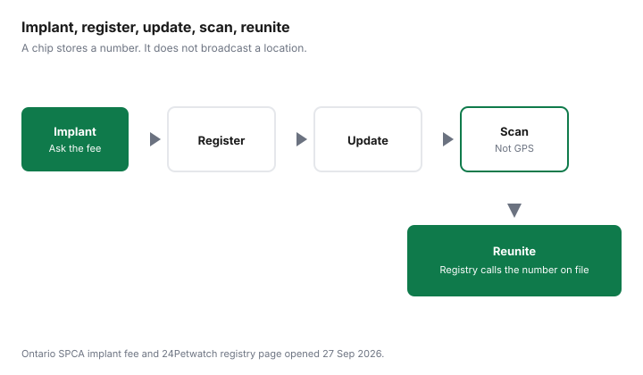

Pets · Canada
Pet Microchipping in Canada: Cost, Registration Fees and Keeping Details Current
A microchip helps only if someone can scan it and reach a person. The implant fee and the registration are different bills, and a chip that still shows an old address is a number without a reunion. This page uses two sources as of 27 Sep 2026: the Ontario SPCA and Humane Society veterinary fee table, and the 24Petwatch registry page. It does not invent a national average, a lifetime-membership price, or a city’s licence fee. The implant sits inside the first-year budget on the dog cost guide. Where a low-cost clinic fits is the clinic guide.
Key takeaways
- Ontario SPCA’s 2026 fee table lists a microchip at $36. The same page says those clinics do not treat emergencies. The fee is for a scheduled implant, not a lost-pet search.
- 24Petwatch’s registry page says registration is free for any brand. The cited text does not print a registration fee or a paid-upgrade price. Ask before you buy an add-on a seller offers.
- The registry stores the chip number and contact details. Notification starts after a scan is reported. That is not GPS.
- A municipal licence is a separate city registration. No licence fee is listed here. Do not treat the chip as the licence.
- Update the phone number after a move or a rehoming, and confirm the number a shelter would see. An adoption package that includes a chip is described on the adoption guide, not priced again here.
What a microchip is, and what it isn't (not GPS)
The 24Petwatch page describes its registry as a database of microchip identification numbers and the pet parent’s contact details. Shelters, rescues, and clinics look the number up when a lost animal arrives.
The pet parent is notified, on that page’s description, by text and automated phone calls after the registry is told the animal was found. The steps start with a scanner and a person who reports the scan. Nothing on that page describes a live location, a map, or a battery in the chip. A microchip is not GPS. A collar tag with a current phone number still matters, because a neighbour may not have a scanner.
The same page says the registry can register any brand of chip. If you already have a number on the paperwork from a shelter or a clinic, that number is what you register or update. Buying a second chip because you are unsure who holds the first one is a question for the clinic that scans you, not a default. Ask them to scan first. The U.S. border guide is a different use of a scannable chip, for dogs entering the United States. A border form is not a Canadian lost-pet registry.
Where to get one: vets, shelters and low-cost clinics
The priced implant cited here is the Ontario SPCA’s. The veterinary services page lists five clinics: Greater Sudbury, York Region in Stouffville, Marion Vernon Memorial in Barrie, Durham Region in Whitby, and Northwest in Thunder Bay. The 2026 fee table includes a microchip at $36, beside a wellness exam at $60.
A deposit is required to book. Basic veterinary care is described as open to the public, with appointment priority for people on a subsidy, people without a regular veterinarian, or people with Indigenous status. The page says the clinics do not have the capacity to provide emergency care or treat injured or sick animals. Do not drive there in an emergency because the microchip line is $36.
A private clinic, a humane society in another city, or a shelter at adoption can charge something else, or can include the implant in a fee you already paid. Those prices are not listed here. Ask, and write the answer next to the Ontario SPCA figure so you are not treating $36 as Canada. The spay and neuter guide is the surgery list at the same Ontario SPCA clinics, if you are already booking a procedure and want to ask whether the chip can be done the same day. The vet-bill guide is how to ask a private clinic for an itemized estimate before you add a chip to a larger visit. Cancellation rules on the Ontario SPCA page are separate from the $36: a basic-care cancellation less than seven days ahead is subject to a $25 cancellation fee, and a spay or neuter cancellation fee is $100. Read that note before you book a trip.
Registration: the chip company's database vs a municipal licence
Registration is the record that connects the number to you. The 24Petwatch page says you register for free, with the pet parent’s phone number and email and information about the pet.
It describes the registry as a database of chip numbers and contact details. The text as of 27 Sep 2026 does not list a registration fee or a paid-membership price. If a phone agent offers a lifetime or annual membership, ask what the free registration still includes, and read the registry’s own page before you pay. This guide does not print a membership price that is not published.
A municipal licence is the city’s list, not the chip company’s database. Some cities require a licence for a dog, and sometimes for a cat, and the fee and the proof they want are on that city’s animal-services page. No city fee schedule is cited here, so none is copied. Mentioning the licence is only so you do not skip it because you chipped the animal, and do not skip the chip because you bought a tag. They are two records. Keep both current if your city requires the licence.
Keeping details current after a move or rehoming
The failure mode is an implant that was registered once, to a phone that has since changed. When you move, when the household’s mobile number changes, or when the animal goes to a new home, update the registry that holds the number.
The 24Petwatch page tells veterinary clinics to update client information as part of routine care. You can do the same from the owner side if the registry gives you a login. After you save the change, have someone else look the number up, or call the registry and ask which phone they would dial. A screenshot of a form is not proof the finder will reach you.
Rehoming needs the new person’s name and phone, not only yours “in case.” If you are adopting, ask the shelter which registry holds the chip and whether the adoption fee already paid for registration. The adoption guide compares published shelter fees. This page does not repeat them. If you are giving an animal to a new household, do the transfer before the animal leaves, and ask whether the registry charges a transfer. No transfer fee is printed on that page. The cell in the table says ask.
Scanning and lost-pet recovery
If the animal is missing, tell the registry, as the 24Petwatch page instructs pet parents to do, and tell local shelters. If you find an animal, a clinic or shelter can scan.
The page’s reunite path is: the chip is scanned, the registry is notified, the pet parent is contacted by text and automated phone call, and the people arrange the handover. The same page says a lost-pet recovery specialist can search animals reported found after you notify the registry. That search still starts with a report. There is no step where the chip broadcasts a street address. File a report with your city if it has a lost-pet process, and keep the chip number in your phone so you are not searching a drawer.
Costs checklist
Split the bill into implant, registration, any paid add-on a seller offers, a transfer, and a city licence. Pay the implant once.
Complete the free registration where the registry’s page says it is free. If someone offers a paid add-on, the 24Petwatch page does not price one, so ask what you still receive if you decline it. Budget the city’s licence separately when the city requires it. The checklist is the table.
| Component | What it is | Figure | If it is not listed |
|---|---|---|---|
| Implant | The chip placed by a clinic. | Ontario SPCA 2026 table: $36. | Ask any other clinic. Do not copy $36 onto their invoice. |
| Registration | The database that links the number to a phone. | 24Petwatch: free for any brand. No registration fee was printed. | A different registry may charge. Read its page. |
| Lifetime or annual upgrade | A paid add-on a seller may offer. | Not described, and not priced, on the page cited here. | Ask. Do not use a figure from a forum. |
| Transfer | Moving the record to a new household. | Not printed. | Ask the registry before the animal changes homes. |
| Municipal licence | The city’s own registration. | Not listed. | Ask the city. A chip does not replace it. |

Sources
- Ontario SPCA and Humane Society, veterinary services page, as of 27 Sep 2026. 2026 fee table: microchip $36, wellness exam $60. Five clinics named on that page. No emergency care. Deposit to book. Basic-care cancellation fee $25 and spay or neuter cancellation fee $100 when the cancellation is less than seven days ahead, as that page describes.
- 24Petwatch registry page for shelters, rescues, and clinics (24pet.com/products/registry), as of 27 Sep 2026. Free registration for any brand, with the pet parent’s phone number and email. Database of chip numbers and contact details. After a reported scan, notification by text and automated phone call. Lost-pet recovery specialists are described as searching reports of found animals. No paid-upgrade price and no GPS claim on that page. No municipal fee.
- Canadian Animal Health Institute chip-registry pages and municipal fee schedules are not covered here. No figure from them is used. Paid membership prices seen only in unsourced summaries are dropped.
Frequently asked questions
How much does microchipping cost?
The Ontario SPCA and Humane Society 2026 fee table, as of 27 Sep 2026, lists a microchip at $36 at its clinics. That is an implant fee on that table, not a national price and not a registration fee. Other clinics, shelters, and cities are not priced here. Ask the place that will do the implant, and ask whether a registration is included.
Do I have to pay to register a microchip?
The 24Petwatch registry page as of 27 Sep 2026 says you can register a microchip for free, for any brand, with a phone number, an email, and information about the pet. That page does not print a registration fee, and it does not print a price for a paid upgrade. A different registry can charge. Read that registry’s page before you pay.
How do I update my pet’s microchip?
Update the phone number, email, and address on the registry that holds the chip number, and do it when you move or when the animal changes homes. The 24Petwatch page describes the database as the chip number plus the pet parent’s contact details, and it tells clinics to update client information. Confirm the change by searching the number the way a shelter would. A chip with an old number is an implant, not a reunion.
Is a microchip the same as a licence?
No. A microchip registry is a database tied to the number under the skin. A municipal licence is the city’s own registration, with its own fee and its own renewal. This page does not price licences. If your city requires one, use the city’s animal-services page. The two records can both be current. Neither replaces the other.
Can a microchip track my pet?
Not as a live map. The 24Petwatch page describes storing the identification number and contact details, looking the number up when a lost animal is scanned, and notifying the pet parent after the registry is told. That process starts with a scanner and a person. It is not GPS. A collar tag with a phone number is still worth using, because a scan is not the only way a neighbour finds you.
Researched and drafted with AI assistance and fact-checked against official Canadian sources. How we create content.